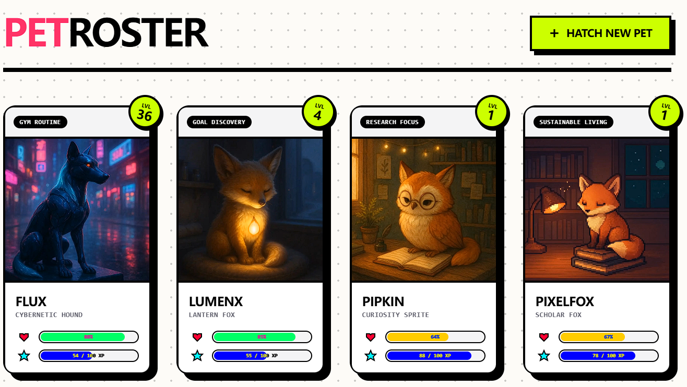

Addressing App Abandonment
How can digital systems prevent users from quickly abandoning self-directed goal trackers after initial setup?
An AI companion for personal growth
Personalized technology to support self-directed goals & behavior intervention.
View PET on GitHub
PET studies how an AI pet can help people set meaningful goals, stay motivated, and turn intentions into sustainable actions.
How can digital systems prevent users from quickly abandoning self-directed goal trackers after initial setup?
How can generative AI convert open-ended, user-defined goals into personalized virtual pets rather than relying on fixed, single-domain characters?
How does generating a companion directly from a user's self-described goals shape their emotional attachment, sense of ownership, and companion identity?
PET investigates how a personalized AI companion affects goal pursuit, daily engagement, and users' relationships with their pets.
What are the effects of a personalized virtual pet, combined with an AI-supported goal-planning system, on self-directed goal pursuit?
What are participants’ experiences with the pet as an AI-generated personal companion during goal support?
How does PET’s care-loop mechanic sustain daily engagement beyond initial conversational novelty?
How does generative personalization shape users’ identification with, ownership of, and attachment to their companion?
Research papers, posters, demonstrations, and project reports related to PET.
Qiming Sun, I-Han Hsiao, and Shih-Yi Chien · The 14th International Conference on Human-Agent Interaction (HAI '26) · 2026
Qiming Sun and I-Han Hsiao · 37th ACM Conference on Hypertext (HT '26) · 2026
Qiming Sun and I-Han Hsiao · Hawaii International Conference on System Sciences (HICSS) · 2027
Personalized gEnerative Tamagotchi (PET) is an AI pet designed to support people as they pursue self-directed goals. PET explores how personalization, companionship, and generative AI can make behavior interventions more engaging and supportive.
This website documents the motivation, research questions, development process, and outcomes of the project.
Lead Developer & Researcher
PhD Candidate · Currently on the job market
Undergraduate Research Assistant
Principal Investigator
Associate Professor
Collaborator
National Chengchi University (NCCU)
Collaborator
University of California, Santa Cruz (UCSC)